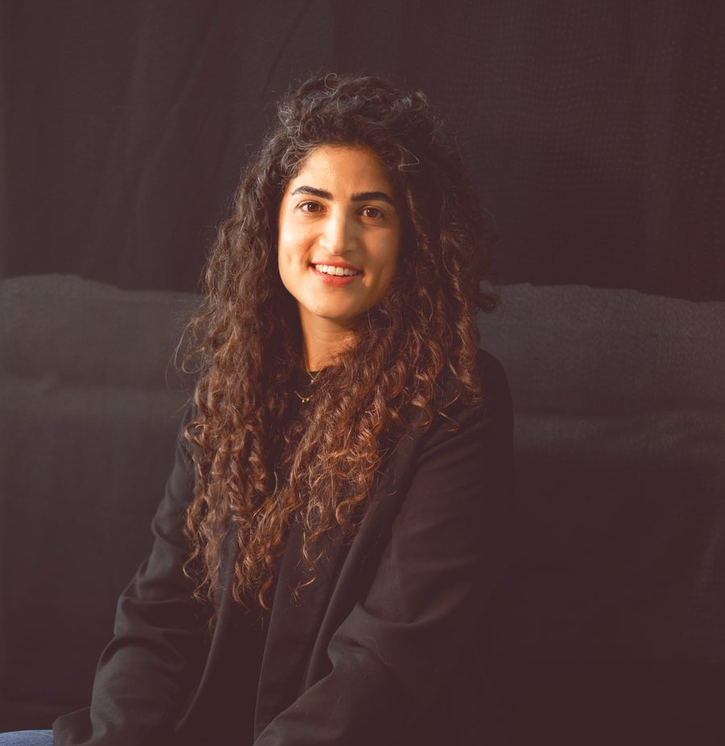

תתחילי בך.
לתיאום שיחת היכרות בוואטסאפלחצי על מה שמוכר לך, וגלי על מה נעבוד יחד:
כשאנחנו תחת לחץ, אנחנו לא מגיבות מתוך בחירה. אנחנו מגיבות מתוך דפוסים ישנים, מה שגדלנו עליו ומה שיוצא לנו באוטומט.
הפער הזה הוא נקודת התחלה.
לפני כעשר שנים עמדתי בדיוק איפה שאת עומדת עכשיו. מאמנת הורים שינתה לי את החיים, ובאותו רגע הבטחתי לעצמי: כשאהיה גדולה, זה מה שאעשה.
ולכן מאמנת הורים מציעה תהליך שמותאם בדיוק לך, לילדים שלך ולמשפחה שלך. יחד נבין מה באמת חשוב לך בהורות, באילו קשיים את נתקלת, איזו אמא את רוצה להיות ואיך להפוך את החזון שלך למציאות, בקשר עם הילדים שלך ובכלל.
בהורות אין קיצור דרך, ולכן לא יהיו כאן טיפים או טריקים.
הורות היא מסע, ואת תבחרי את הדרך.
הגעתי למירית בגלל ההתפרצויות של הבן שלי, ילד בן 5 וחצי. כמעט כל תשובה שלא התאימה למה שציפה הובילה לבכי, לכעס ולהשתוללות. אחרי הליווי, מספר הטנטרומים ירד למקסימום פעמיים בשבוע.
שיתפתי את הילדים בדברים שמטעינים אותי. היום, לפחות פעם ביום, אחד הילדים שואל אותי איך "הטענתי את עצמי היום". יש פה אכפתיות, חמלה וראייה שלא היו כאן קודם.
הגעתי למירית דרך חברה משותפת, בזכות המקצועיות שלה, ונשארתי בעיקר בגלל הניסיון וההקשבה שלה. בליווי עלו אתגרים שלא העזתי לומר בקול לפני כן.
מה השתנה בשבילך? שתפי את הסיפור שלך כדי להשראות אמהות נוספות:
